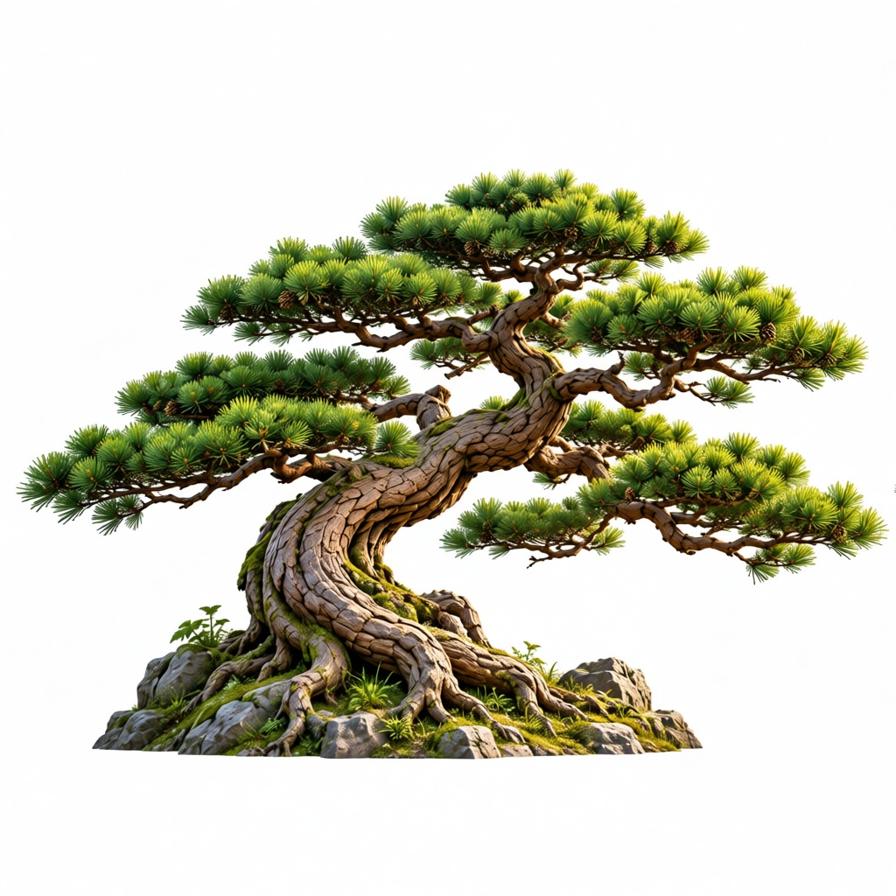
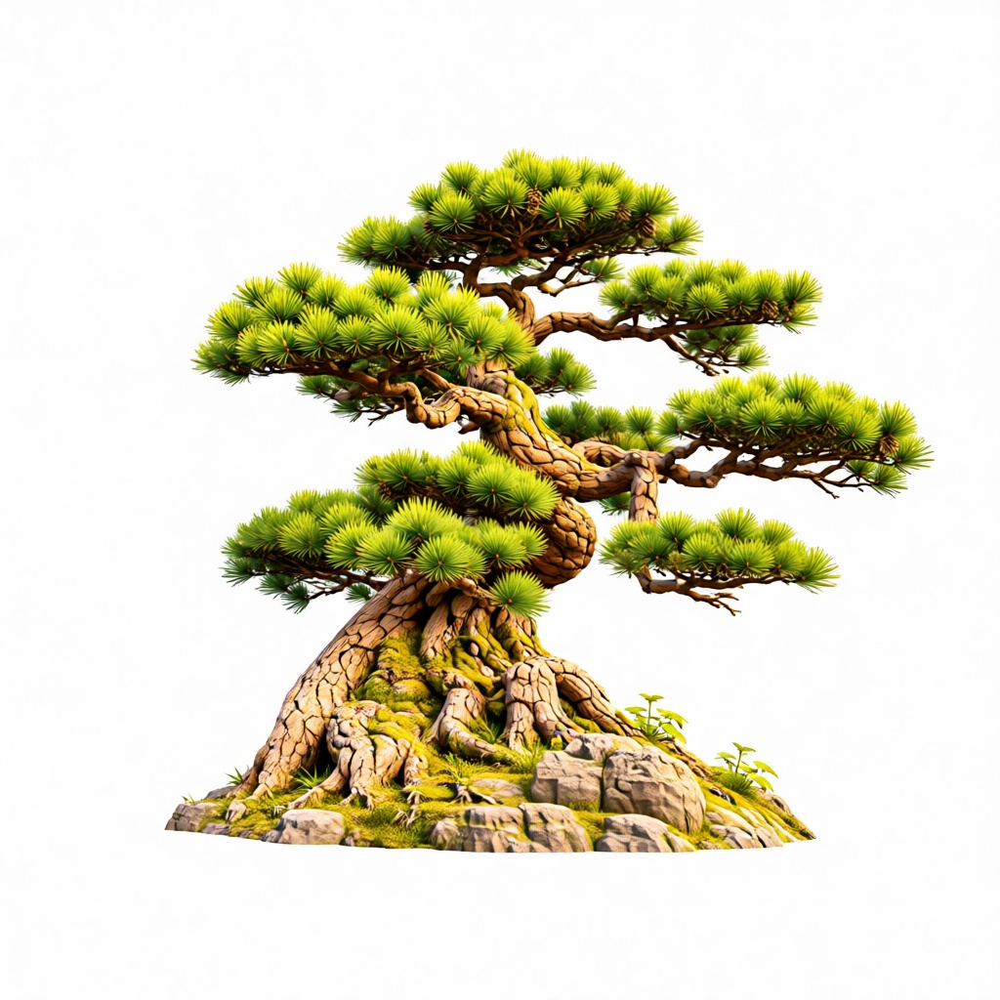
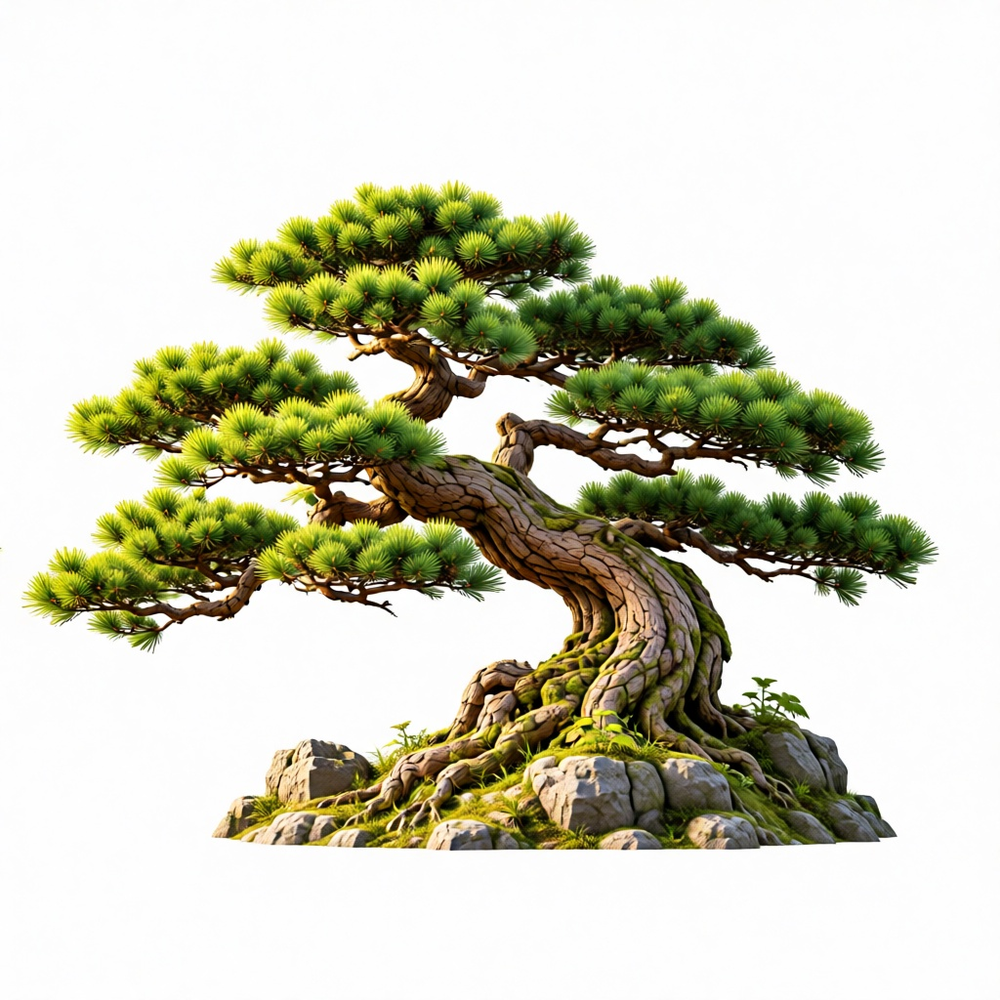
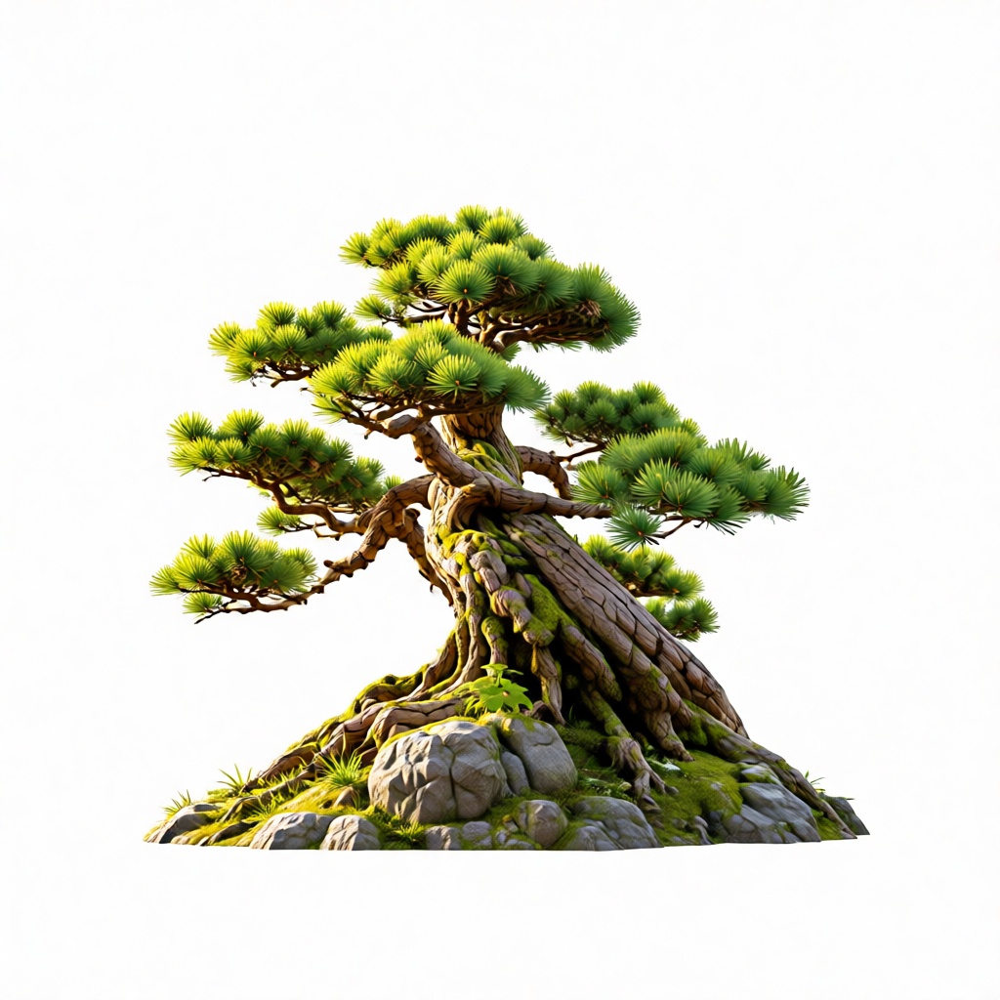

批准原始参考图1536 × 1024

AI 正面1024 × 1024

AI 左侧1024 × 1024

AI 背面1024 × 1024

AI 右侧1024 × 1024

本轮验收
正面树形、针叶层次与参考图接近；四面画风初步一致。仍不能从二维图像证明侧、背面的分叉数量、岩石位置和树根真实连续，只有转为三维并旋转验收才能判断。
判断：G0 图像阶段有条件通过，可以进入单次低费用、无贴图 3D 几何验证；G1 三维剪影和 G2 材质都未开始。
详见 完整质量验收报告。